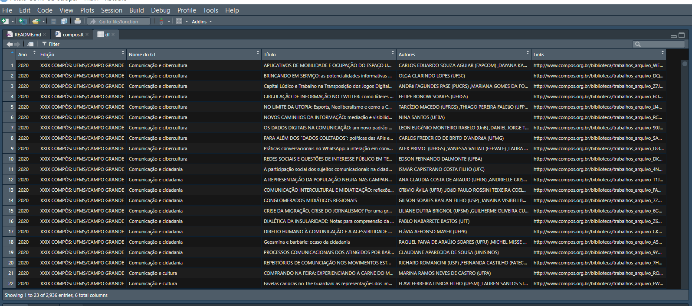

6 COMPÓS
6.1 O que é a COMPÓS?
Diante disso, desenvolvemos o Anais-COMPOS-scraper – disponível aqui – que realiza o download automatizado de todos os papers em pdf dos Encontros da COMPÓS entre 2000 até 2020 (disponíveis atualmente na site). Além disso, o script também gera um arquivo CSV (comma-separated values) contendo as seguintes informações para cada paper: Ano, Edição, Nome do GT, Título, Autores, e Link do Arquivo. Esse arquivo pode ser aberto como uma planilha e trabalhado em banco de dados.
O raspador expressa mais uma iniciativa que busca contribuir para uma ciência aberta e transparente, facilitando o acesso aos dados dos congressos e contribuindo para a preservação da memória das ciências sociais brasileiras.
6.2 Script de raspagem
6.2.1 R e RStudio
O R e RStudio são gratuitos e possuem versões para Windows, Mac e Linux. A instalação é bastante fácil e em geral você apenas tem que seguir as instruções da tela.
Para instalar o R, baixe a versão adequada para seu computador em: https://cloud.r-project.org/
Para instalar o RStudio, baixe a versão adequada para seu computador em: https://www.rstudio.com/products/rstudio/download/
Além disso, para ter um ambiente completo de desenvolvimento no R, recomendamos, adicionalmente, instalar:
– MikTex (para Windows: http://miktex.org/download ou MacTex (para Mac: https://tug.org/mactex/downloading.html para relatórios em latex.
– RTools (para Windows: https://cran.r-project.org/bin/windows/Rtools/ ou Xcode com command line tools (para Mac na AppStore do Mac), para criar pacotes, usar C++ com R entre outras coisas
Após a instalação, vc pode executar o arquivo compos.R que está na pasta R direto do RStudio.
6.2.2 Bibliotecas e módulos
Vocêr vai precisar instalar as seguintes bibliotecas:
6.3 Dados
O programa exporta, para cada edição do congresso, uma tabela no formato CSV com as seguintes informações de cada trabalho apresentado:
Ano,Edição,Nome do GT,Título,Autores,Links.
A imagem abaixo ilustra o formato de uma das tabelas:

Download: Se preferir baixar a base dos PDFs sem usar o código clique aqui. (OBS:a nomeação ainda contém alguns pequenos erros que serão corrigidos em breve)
Download: Se preferir baixar a planilha sem usar o código clique aqui.